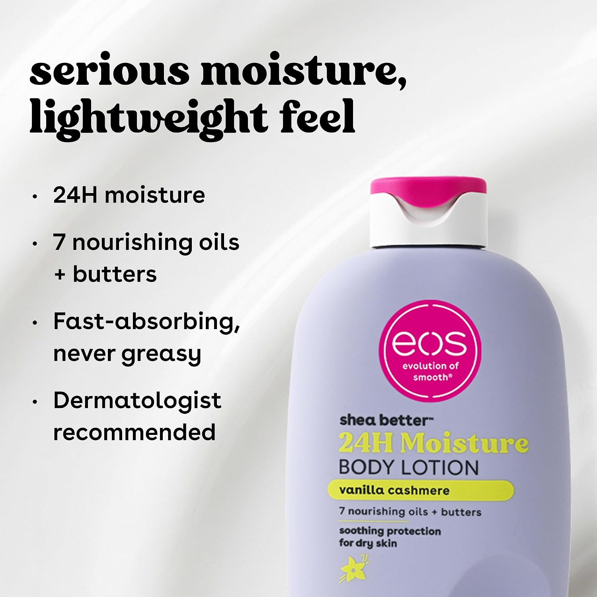
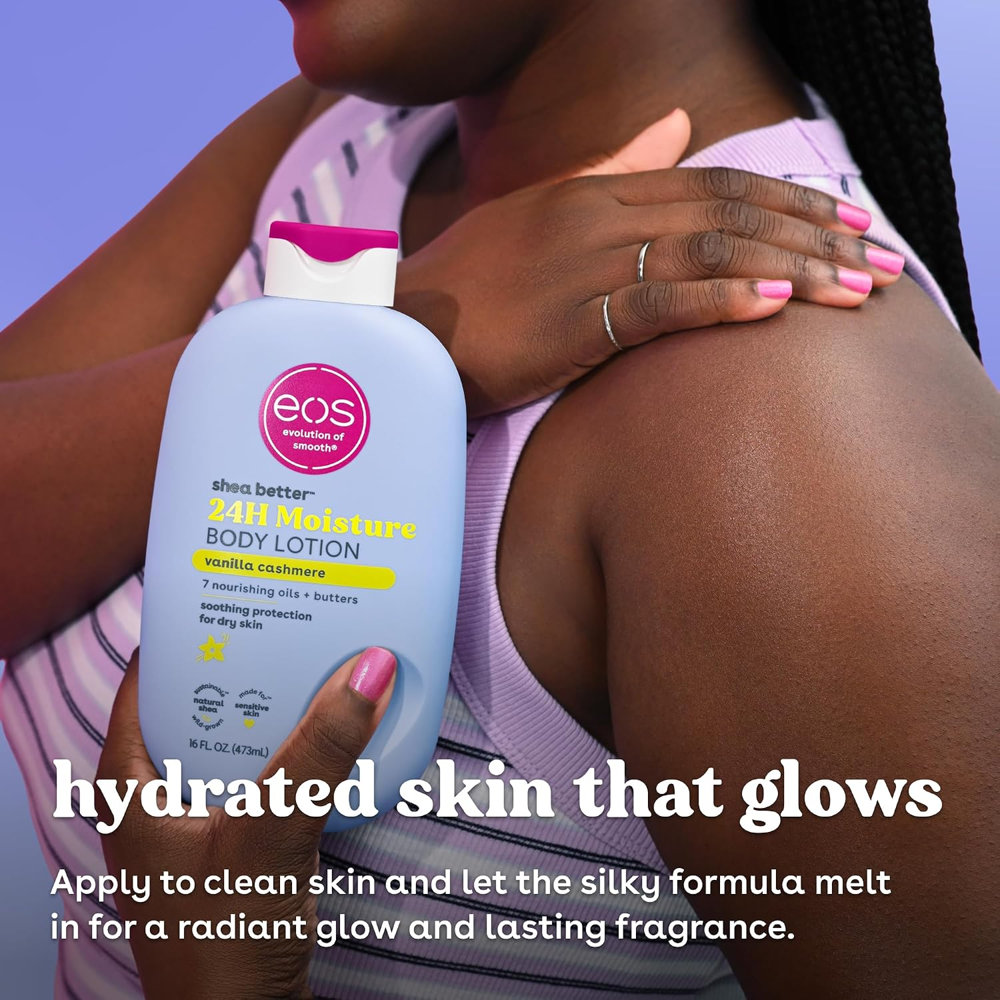

The eos Shea Better 24H Moisture Body Lotion in Vanilla Cashmere is positioned as a scented, moisture-focused body lotion with shea-derived ingredients, oils, and butters. Its appeal is straightforward: a comfort-first body-care step for people who enjoy a warm, dessert-like fragrance as much as the feeling of applying lotion.
What makes this lotion different?
Rather than presenting itself as a barely-there, fragrance-free basic, Vanilla Cashmere leans into a recognizable sensory experience. The published scent direction is warm and sweet, built around vanilla with soft musk and caramel notes. That can make a regular body-care step feel more intentional—but it also means fragrance is the first thing to evaluate if your skin is easily reactive.
Ingredient context without the hype
According to the packaging, the lotion combines moisturizing and softening ingredients including shea butter, shea oil, glycerin, and emollients. In practical terms, a formula like this is designed to help skin feel smoother and more comfortable after application. How it feels on your own skin will depend on climate, how much you use, and whether your routine already includes fragranced products.
Who may enjoy it—and who may want to pause
It may suit you if…
- You enjoy warm vanilla-forward body-care scents.
- You prefer a richer-feeling lotion after showering or before bed.
- You want one simple product that adds both comfort and a sensory ritual.
Pause or patch-test if…
- You know fragranced products irritate your skin.
- Your skin barrier is currently compromised or inflamed.
- You want a truly unscented, minimalist formula.
A simple way to use it
Apply to clean, slightly damp skin after bathing, then use less than you think at first. Start with arms and legs, and keep it away from areas where you already know fragrance is uncomfortable. If you are testing it for the first time, a small patch test is a sensible, low-effort step.

The balanced takeaway
This is a body lotion for someone who wants hydration to feel enjoyable, not invisible. The Vanilla Cashmere scent is likely the reason to choose it—or the reason to choose something else. If fragrance agrees with your skin and you like a comforting finish, it may be an appealing everyday option. If your priority is managing sensitive or medically diagnosed skin concerns, seek a product and professional guidance appropriate to that need.
Interested in face care too? Our BIODANCE guide uses the same “claims, context, and fit” approach before recommending a purchase.
Affiliate disclosure: KokoroFlow may earn from qualifying purchases if affiliate links are added to this page in the future. Any such link will be clearly identified near the point of choice.